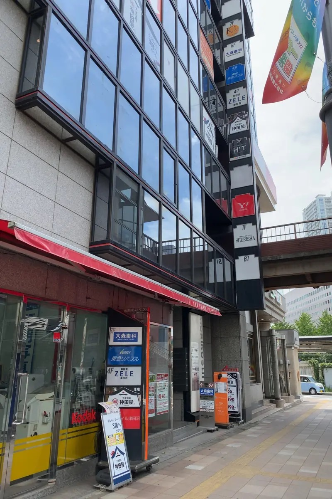
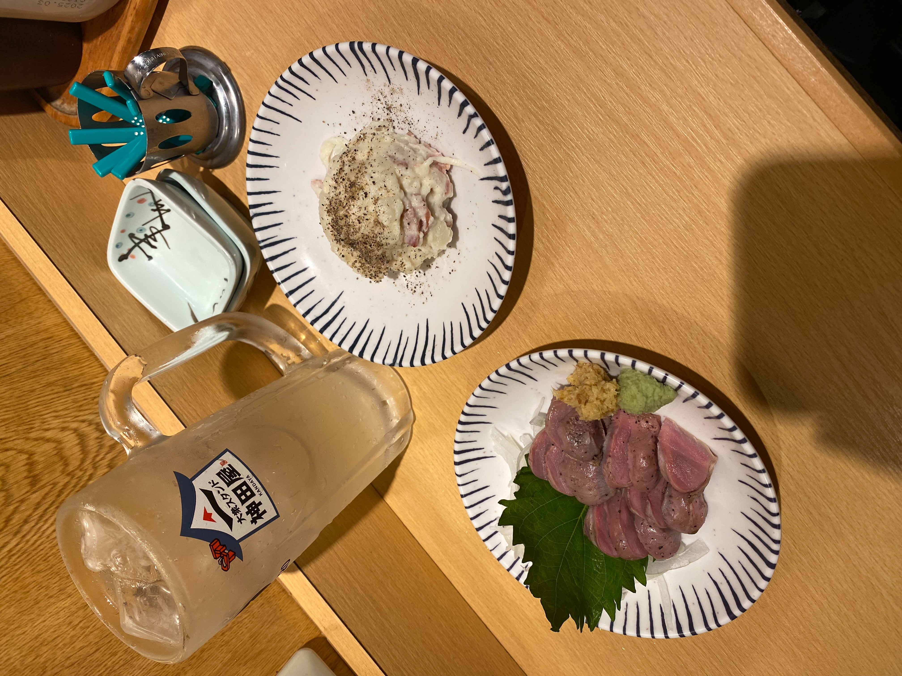
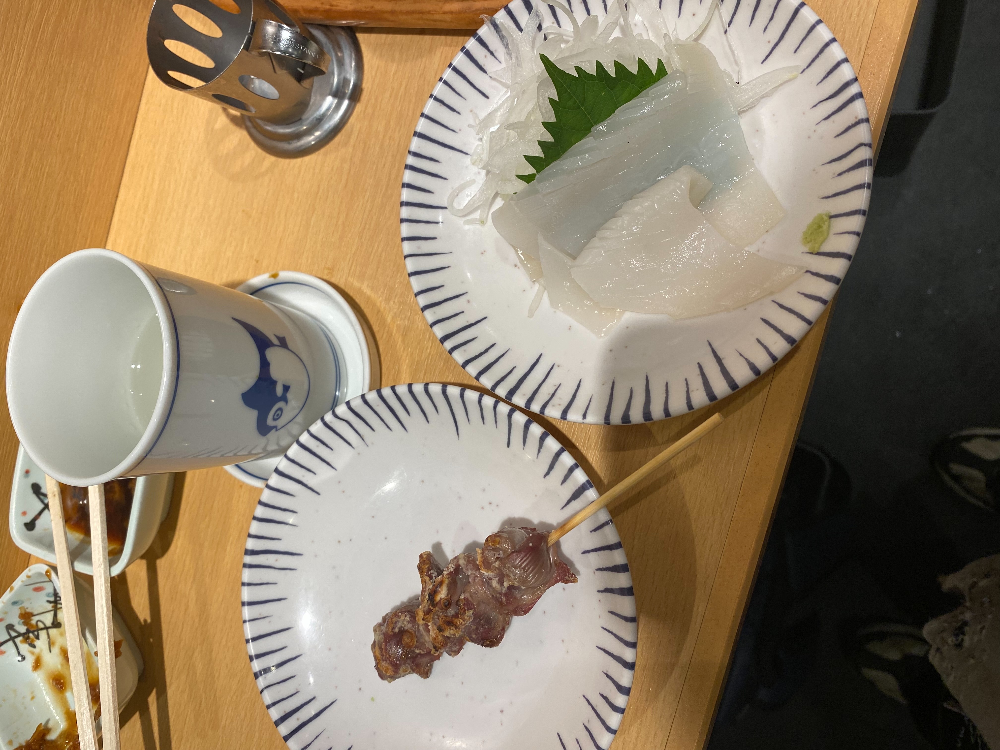

あなたのお気に入りの安いセットを見つけよう

場所はこちらここでは、大衆スタンド神田屋のお勧めの安いセットを紹介します。
この神田屋では、立ち飲み1100円がお勧めです。この商品は、注文時に点棒を10本もらい、点棒を払って商品を注文します。そのため、自分だけの千ベロセットを作ることが出来ます。


1回目の注文では、点棒を1本ずつでパンチレモンサワーとポテトサラダ、点棒を2本で砂肝刺しを注文しました。
2回目の注文では、点棒を1本で砂肝串、点棒を2本で日本酒（熱燗）、点棒を3本でイカ刺しを注文しました。
合計で6品で1100円（税込み）になりました。